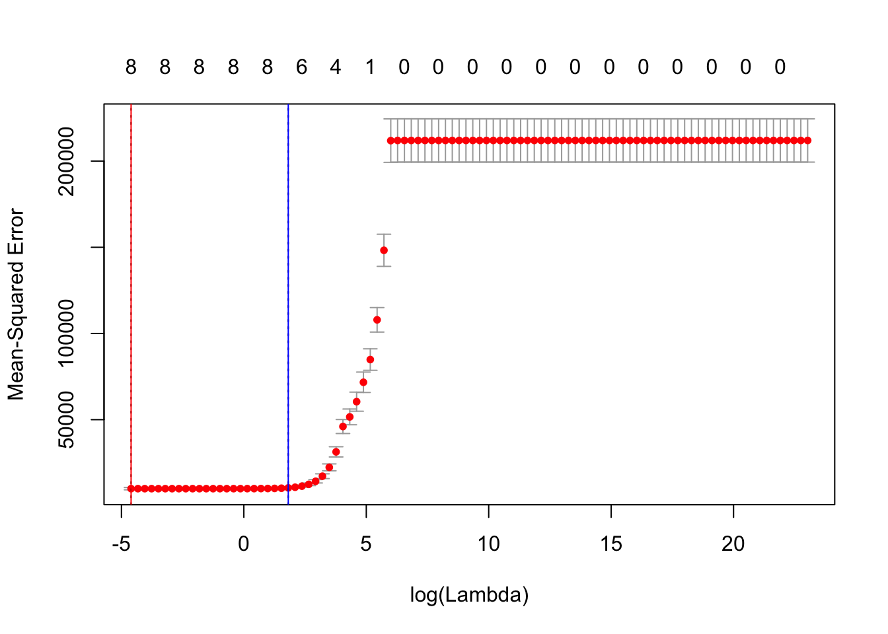
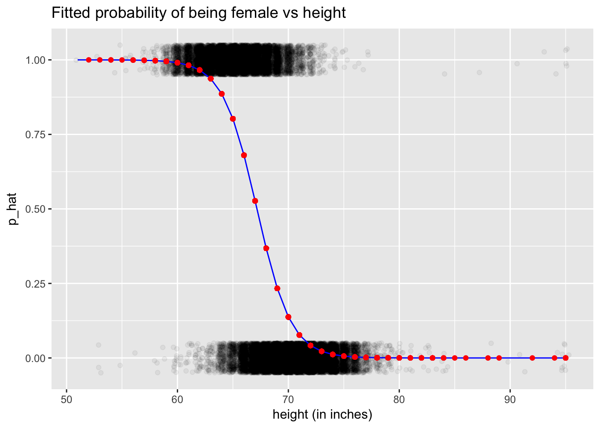

Quickstart Guide to Models
1 Unsupervised learning
library(tidyverse)
# No outcome variable for unsupervised learning:
iris_predictors <- iris %>%
select(-Species)1.1 \(k\)-means clustering
k <- 2
# Fit kmc
k_means_results <- kmeans(iris_predictors, centers=k)
# Assign each of 150 rows to one of k clusters
clusters <- k_means_results$cluster
# Get cluster centers and add cluster number column
cluster_centers <- k_means_results$centers %>%
as_tibble() %>%
mutate(cluster = 1:k) %>%
select(cluster, everything())2 Regularization
library(tidyverse)
credit <- read_csv("http://www-bcf.usc.edu/~gareth/ISL/Credit.csv") %>%
select(-X1)2.1 LASSO
2.1.1 Fit/train model
# Load packages and wrapper function. Note understanding the internal workings
# of this wrapper function is not required. If you're curious why all this is
# needed though: https://github.com/tidyverse/broom/issues/226
library(glmnet)
get_LASSO_coefficients <- function(LASSO_fit){
coeff_values <- LASSO_fit %>%
broom::tidy() %>%
as_tibble() %>%
select(-c(step, dev.ratio)) %>%
tidyr::complete(lambda, nesting(term), fill = list(estimate = 0)) %>%
arrange(desc(lambda)) %>%
select(term, estimate, lambda)
return(coeff_values)
}
# 1. Define model formula
model_formula <- as.formula("Balance ~ Income + Limit + Rating + Student + Cards + Age + Education + Married")
# 2. Define "model matrix"
# Note that:
# -This function conveniently converts all categorical outcomes to numerical
# ones using "one-hot encoding" as defined in the flashcard for Lec 3.7.
# -We also remove the first column corresponding to the intercept
predictor_matrix <- model.matrix(model_formula, data = credit)[, -1]
# 3. Define values of tuning/complexity parameter lambda
# Note: we set them to increase at an exponential rate in powers of 10
lambda_inputs <- 10^seq(-2, 10, length = 100)
# 4. Fit the model using glmnet
# Note:
# -Setting alpha=1 corresponds to LASSO, while setting alpha=0 corresponds to
# ridge regression
# -Here we manually specify the lambda values to use. If we didn't set lambda =
# lambda_inputs, glmnet() would choose default values.
LASSO_fit <- glmnet(x=predictor_matrix, y=credit$Balance, alpha = 1, lambda = lambda_inputs)
# 5. Get beta-hat coefficients for ALL values of knob/tuning parameter lambda
LASSO_coefficients <- get_LASSO_coefficients(LASSO_fit)2.1.2 Coefficients analysis
For each value of the \(\lambda\) tuning parameter contained in the lambda_inputs vector we specified above, let’s look at all the \(\widehat{\beta}\) coefficients:
ggplot(LASSO_coefficients, aes(x=lambda, y=estimate, col=term)) +
geom_line() +
labs(x="lambda", y="beta-hat coefficient estimate")There are two problems with this plot:
- We’re not interested in the value of the intercept, since this is left out of complexity penalization. So let’s ignore this.
- The values of \(\lambda\) on the x-axis are difficult to see, so let’s rescale the x-axis to be on a \(\log10\) scale:
plot_LASSO_coefficients <- LASSO_coefficients %>%
filter(term != "(Intercept)") %>%
ggplot(aes(x=lambda, y=estimate, col=term)) +
geom_line() +
scale_x_log10() +
labs(x="lambda (log10-scale)", y="beta-hat coefficient estimate",
title="LASSO regularized coefficient for each lambda value")
plot_LASSO_coefficients
2.1.3 Crossvalidation
How do we do crossvalidation to find the optimal value \(\lambda^*\) of \(\lambda\) that yields the \(\widehat{\beta}\)’s for the predictive model that in turn yields the lowest MSE? Easy! Just add cv. to previous glmnet() call. Let’s pull out the
- Value \(\lambda^*\) corresponding to the minimal MSE (red line in plot below)
- Value of \(\lambda^*_{1SE}\) corresponding to the simplest model within one standard error of minimal MSE (blue line in plot below)
LASSO_CV <- cv.glmnet(x=predictor_matrix, y=credit$Balance, alpha=1, lambda=lambda_inputs)
# Optimal lambdas
lambda_star <- LASSO_CV$lambda.min
lambda_star_1SE <- LASSO_CV$lambda.1seLet’s plot the result in base R. Note that here we are plotting \(\log(\lambda)\) on the x-axis instead of \(\lambda\) on a \(\log10\)-scale like we did in the earlier plot “LASSO regularized coefficient for each lambda value”.
plot(LASSO_CV)
abline(v=log(lambda_star), col="red")
abline(v=log(lambda_star_1SE), col="blue")
What does this mean in terms of the values of the \(\widehat{\beta}\)’s? Let’s revisit the earlier plot “LASSO regularized coefficient for each lambda value” but plot the two \(\lambda\) values with red and blue lines again.
plot_LASSO_coefficients <- plot_LASSO_coefficients +
geom_vline(xintercept = lambda_star, col="red", alpha=0.4, linetype="dashed") +
geom_vline(xintercept = lambda_star_1SE, col="blue", alpha=0.4, linetype="dashed")
plot_LASSO_coefficients
Let’s zoom-in for a closer look:
plot_LASSO_coefficients +
coord_cartesian(xlim=c(1, 1000), ylim=c(-1, 1))
Notice the order in which the \(\widehat{\beta}\)’s drop to 0, from first to last:
- Education (olive green)
- Whether or not they are married (smurf blue)
- Age (red)
- Number of cards (gold)
- Income (green)
- Whether or not they are a student (pink)
- Credit limit (teal)
- Rating (light purple)
2.1.4 Predict outcomes for test data
Let’s use the optimal \(\lambda^*\) corresponding to the simplest model within one standard error of minimal MSE for our predictions by setting s=lambda_star_1SE (BTW s is a horrible name for a function argument):
y_hat <- predict(LASSO_fit, newx=predictor_matrix, s=lambda_star_1SE) %>%
as.vector()
hist(y_hat)3 Categorical outcomes (\(\geq\) 2 levels)
library(tidyverse)
iris <- iris %>%
as_tibble() %>%
# Add ID column:
mutate(ID = 1:n()) %>%
select(ID, Species, Sepal.Length, Sepal.Width)3.1 Classification and regression trees
3.1.1 Fit/train model
library(rpart)
model_formula <- as.formula(Species ~ Sepal.Length + Sepal.Width)
tree_parameters <- rpart.control(maxdepth = 3)
model_CART <- rpart(model_formula, data = iris, control=tree_parameters)
# Alas there is no broom functionality; this won't work
# model_CART %>% broom::tidy()
#
# Use these instead, but they are not that helpful IMO
# print(model_CART)
# summary(model_CART)
# Plot
plot(model_CART, margin=0.25)
text(model_CART, use.n = TRUE)
title("Predicting iris species using sepal length & width")
box()
3.1.2 Get fitted probabilities/predictions
Output 1: Get fitted probabilities
p_hat_matrix <- model_CART %>%
predict(type = "prob", newdata = iris)
# Look at a random sample of 5 of them
p_hat_matrix %>%
as_tibble() %>%
sample_n(5)| setosa | versicolor | virginica |
|---|---|---|
| 0.0000000 | 0.2909091 | 0.7090909 |
| 0.9777778 | 0.0222222 | 0.0000000 |
| 0.0000000 | 0.2909091 | 0.7090909 |
| 0.9777778 | 0.0222222 | 0.0000000 |
| 0.0000000 | 0.7222222 | 0.2777778 |
# Score/error
MLmetrics::MultiLogLoss(y_true = iris$Species, y_pred = p_hat_matrix)## [1] 0.4599391Output 2: Get explicit predictions y_hat based on fitted probabilities with ties broken at random.
y_hat <- model_CART %>%
predict(newdata=iris, type="class")
# Score/error
MLmetrics::Accuracy(y_true = iris$Species, y_pred = y_hat)
MLmetrics::ConfusionMatrix(y_true = iris$Species, y_pred = y_hat)## [1] 0.7933333## y_pred
## y_true setosa versicolor virginica
## setosa 49 1 0
## versicolor 3 31 16
## virginica 0 11 393.2 \(k\)-nearest neighbors
3.2.1 Fit/train model
library(caret)
library(MLmetrics)
k <- 3
model_formula <- as.formula(Species ~ Sepal.Length + Sepal.Width)
model_knn <- caret::knn3(model_formula, data=iris, k = k)3.2.2 Get fitted probabilities/predictions
Output 1: Get fitted probabilities
p_hat_matrix <- model_knn %>%
predict(newdata=iris, type="prob") %>%
round(3)
# Look at a random sample of 5 of them
p_hat_matrix %>%
as_tibble() %>%
sample_n(5)| setosa | versicolor | virginica |
|---|---|---|
| 1 | 0.000 | 0.000 |
| 0 | 0.200 | 0.800 |
| 0 | 0.333 | 0.667 |
| 0 | 0.667 | 0.333 |
| 1 | 0.000 | 0.000 |
# Score/error
MLmetrics::MultiLogLoss(y_true = iris$Species, y_pred = p_hat_matrix)## [1] 0.2944172Output 2: Get explicit predictions y_hat based on fitted probabilities with ties broken at random.
y_hat <- model_knn %>%
predict(newdata=iris, type="class")
# Score/error
MLmetrics::Accuracy(y_true = iris$Species, y_pred = y_hat)
MLmetrics::ConfusionMatrix(y_true = iris$Species, y_pred = y_hat)## [1] 0.8466667## y_pred
## y_true setosa versicolor virginica
## setosa 50 0 0
## versicolor 0 38 12
## virginica 0 11 394 Binary outcomes (2 levels)
library(tidyverse)
library(broom)
library(okcupiddata)
profiles <- profiles %>%
as_tibble() %>%
# Create binary outcome variable y:
mutate(y = ifelse(sex=="f", 1, 0)) %>%
# Remove heights below 50 inches:
filter(height>50) %>%
# Add ID column:
mutate(ID = 1:n()) %>%
select(ID, sex, y, height) %>%
# Remove all rows with NA missing values:
na.omit()
profiles_train <- profiles %>%
sample_frac(0.5)
profiles_test <- profiles %>%
anti_join(profiles_train, by="ID")4.1 Logistic regression via glm
4.1.1 Fit/train model
model_formula <- as.formula(y~height)
model_logistic <- glm(model_formula, data=profiles_train, family="binomial")
# 1.a) Extract regression table in tidy format
model_logistic %>%
broom::tidy(conf.int=TRUE)| term | estimate | std.error | statistic | p.value | conf.low | conf.high |
|---|---|---|---|---|---|---|
| (Intercept) | 43.5177722 | 0.4951366 | 87.89043 | 0 | 42.5545097 | 44.4954910 |
| height | -0.6479238 | 0.0073291 | -88.40400 | 0 | -0.6623967 | -0.6336658 |
# 1.b) Extract point-by-point info in tidy format
model_logistic %>%
broom::augment() %>%
as_tibble() %>%
sample_n(5)| y | height | .fitted | .se.fit | .resid | .hat | .sigma | .cooksd | .std.resid |
|---|---|---|---|---|---|---|---|---|
| 0 | 68 | -0.5410449 | 0.0169981 | -0.9578916 | 6.72e-05 | 0.8717132 | 1.96e-05 | -0.9579238 |
| 0 | 71 | -2.4848163 | 0.0304517 | -0.4001241 | 6.58e-05 | 0.8717277 | 2.70e-06 | -0.4001373 |
| 0 | 67 | 0.1068789 | 0.0170591 | -1.2231221 | 7.25e-05 | 0.8717022 | 4.04e-05 | -1.2231665 |
| 1 | 65 | 1.4027264 | 0.0248487 | 0.6631420 | 9.78e-05 | 0.8717224 | 1.20e-05 | 0.6631745 |
| 0 | 68 | -0.5410449 | 0.0169981 | -0.9578916 | 6.72e-05 | 0.8717132 | 1.96e-05 | -0.9579238 |
# 1.c) Extract summary stats info in tidy format
model_logistic %>%
broom::glance()| null.deviance | df.null | logLik | AIC | BIC | deviance | df.residual |
|---|---|---|---|---|---|---|
| 40469 | 29956 | -11381.24 | 22766.48 | 22783.1 | 22762.48 | 29955 |
4.1.2 Predict outcomes for test data
# 2. Make predictions on test data
# Method 1:
# -input: profiles_test is a data frame
# -output: log_odds_hat is a vector of log odds
log_odds_hat <- predict(model_logistic, newdata=profiles_test)
p_hat <- 1/(1 + exp(-log_odds_hat))
# Method 2: All new variables start with a period
model_logistic %>%
broom::augment(newdata=profiles_test) %>%
as_tibble() %>%
mutate(p_hat = 1/(1 + exp(-.fitted))) %>%
sample_n(5)| ID | sex | y | height | .fitted | .se.fit | p_hat |
|---|---|---|---|---|---|---|
| 25384 | m | 0 | 74 | -4.4285876 | 0.0503246 | 0.0117907 |
| 28805 | f | 1 | 69 | -1.1889687 | 0.0198568 | 0.2334434 |
| 27009 | f | 1 | 64 | 2.0506502 | 0.0306892 | 0.8860133 |
| 54616 | m | 0 | 70 | -1.8368925 | 0.0246391 | 0.1374192 |
| 57077 | f | 1 | 66 | 0.7548027 | 0.0200130 | 0.6802243 |
4.1.3 Plot
fitted_model <- model_logistic %>%
broom::augment() %>%
as_tibble() %>%
mutate(p_hat = 1/(1 + exp(-.fitted)))
predictions <- model_logistic %>%
broom::augment(newdata=profiles_test) %>%
mutate(p_hat = 1/(1 + exp(-.fitted)))
# Logistic regression is fitted in log-odds(p) space
ggplot(NULL) +
geom_line(data=fitted_model, aes(x=height, y=.fitted), col="blue") +
geom_point(data=predictions, aes(x=height, y=.fitted), col="red") +
labs(x="height (in inches)", y="Fitted log-odds of p_hat", title="Fitted log-odds of probability of being female vs height")# Convert back to probability space
ggplot(NULL) +
# Add observed binary y's, and put a little random jitter to the points
geom_jitter(data=fitted_model, aes(x=height, y=y), height=0.05, alpha=0.05) +
geom_line(data=fitted_model, aes(x=height, y=p_hat), col="blue") +
geom_point(data=predictions, aes(x=height, y=p_hat), col="red") +
labs(x="height (in inches)", y="p_hat", title="Fitted probability of being female vs height")
4.1.4 ROC curve
profiles_train_augmented <- model_logistic %>%
broom::augment() %>%
as_tibble() %>%
mutate(p_hat = 1/(1+exp(-.fitted)))
library(ROCR)
# This bit of code computes the ROC curve
pred <- prediction(predictions = profiles_train_augmented$p_hat, labels = profiles_train_augmented$y)
perf <- performance(pred, "tpr","fpr")
# This bit of code computes the Area Under the Curve
auc <- as.numeric(performance(pred,"auc")@y.values)
auc## [1] 0.907265# This bit of code prints it
plot(perf, main=paste("Area Under the Curve =", round(auc, 3)))
abline(c(0, 1), lty=2)5 Continuous outcomes
library(tidyverse)
library(broom)
# Continuous outcome:
mtcars <- mtcars %>%
mutate(ID = 1:n()) %>%
select(ID, mpg, hp) %>%
as_tibble()
mtcars_train <- mtcars %>%
sample_frac(0.5)
mtcars_test <- mtcars %>%
anti_join(mtcars_train, by="ID")5.1 Regression via lm
5.1.1 Fit/train model
model_formula <- as.formula("mpg ~ hp")
model_lm <- lm(model_formula, data=mtcars_train)
# 1.a) Extract regression table in tidy format
model_lm %>%
broom::tidy(conf.int=TRUE)| term | estimate | std.error | statistic | p.value | conf.low | conf.high |
|---|---|---|---|---|---|---|
| (Intercept) | 27.7294969 | 1.9378897 | 14.309120 | 0.0000000 | 23.573137 | 31.8858569 |
| hp | -0.0541887 | 0.0104576 | -5.181744 | 0.0001392 | -0.076618 | -0.0317593 |
# 1.b) Extract point-by-point info in tidy format
model_lm %>%
broom::augment() %>%
as_tibble() %>%
sample_n(5)| mpg | hp | .fitted | .se.fit | .resid | .hat | .sigma | .cooksd | .std.resid |
|---|---|---|---|---|---|---|---|---|
| 13.3 | 245 | 14.453275 | 1.1255937 | -1.153275 | 0.1248485 | 3.288114 | 0.0106825 | -0.3869914 |
| 15.2 | 150 | 19.601198 | 0.8206518 | -4.401198 | 0.0663648 | 3.054937 | 0.0726634 | -1.4298562 |
| 19.7 | 175 | 18.246481 | 0.7989171 | 1.453519 | 0.0628961 | 3.279508 | 0.0074555 | 0.4713428 |
| 16.4 | 180 | 17.975538 | 0.8047563 | -1.575538 | 0.0638188 | 3.274849 | 0.0089059 | -0.5111625 |
| 15.0 | 335 | 9.576296 | 1.9105202 | 5.423705 | 0.3596859 | 2.719318 | 1.2715092 | 2.1276959 |
# 1.c) Extract summary stats info in tidy format
model_lm %>%
broom::glance()| r.squared | adj.r.squared | sigma | statistic | p.value | df | logLik | AIC | BIC | deviance | df.residual |
|---|---|---|---|---|---|---|---|---|---|---|
| 0.6572867 | 0.6328072 | 3.18559 | 26.85047 | 0.0001392 | 2 | -40.17297 | 86.34593 | 88.6637 | 142.0718 | 14 |
5.1.2 Predict outcomes for test data
# 2. Make predictions on test data
# Method 1:
# -input: mtcars_test is a data frame
# -output: y_hat is a vector
y_hat <- predict(model_lm, newdata=mtcars_test)
# Method 2: All new variables start with a period
model_lm %>%
broom::augment(newdata=mtcars_test) %>%
as_tibble() %>%
sample_n(5)| ID | mpg | hp | .fitted | .se.fit |
|---|---|---|---|---|
| 22 | 15.5 | 150 | 19.60120 | 0.8206518 |
| 17 | 14.7 | 230 | 15.26610 | 1.0207928 |
| 21 | 21.5 | 97 | 22.47320 | 1.0955345 |
| 25 | 19.2 | 175 | 18.24648 | 0.7989171 |
| 5 | 18.7 | 175 | 18.24648 | 0.7989171 |
5.1.3 Plot
fitted_model <- model_lm %>%
broom::augment() %>%
as_tibble()
predictions <- model_lm %>%
broom::augment(newdata=mtcars_test)
ggplot(NULL) +
geom_point(data=fitted_model, aes(x=hp, y=mpg)) +
geom_line(data=fitted_model, aes(x=hp, y=.fitted), col="blue") +
geom_point(data=predictions, aes(x=hp, y=.fitted), col="red") +
labs(x="Horse power", y="Miles per gallon")5.2 LOESS
5.2.1 Fit/train model
model_formula <- as.formula("mpg ~ hp")
model_loess <- loess(model_formula, data=mtcars_train, span=0.9)
# 1.a) Extract point-by-point info in tidy format
model_loess %>%
broom::augment() %>%
as_tibble() %>%
sample_n(5)| mpg | hp | .fitted | .se.fit | .resid |
|---|---|---|---|---|
| 15.2 | 180 | 15.78049 | 1.002655 | -0.5804873 |
| 21.0 | 110 | 21.48413 | 1.060093 | -0.4841343 |
| 19.7 | 175 | 16.13477 | 1.009120 | 3.5652343 |
| 15.8 | 264 | 13.74400 | 1.125115 | 2.0559987 |
| 13.3 | 245 | 13.82568 | 1.080595 | -0.5256779 |
5.2.2 Predict outcomes for test data
# 2. Make predictions on test data
# Method 1:
# -input: mtcars_test is a data frame
# -output: y_hat is a vector
y_hat <- predict(model_loess, newdata=mtcars_test)
# Method 2: All new variables start with a period
model_loess %>%
broom::augment(newdata=mtcars_test) %>%
sample_n(5)| ID | mpg | hp | .fitted | .se.fit | |
|---|---|---|---|---|---|
| 2 | 3 | 22.8 | 93 | 23.33460 | 0.9831676 |
| 12 | 21 | 21.5 | 97 | 22.87784 | 0.9977631 |
| 14 | 25 | 19.2 | 175 | 16.13477 | 1.0091201 |
| 7 | 11 | 17.8 | 123 | 20.20623 | 1.0452946 |
| 15 | 26 | 27.3 | 66 | 26.76795 | 1.2654461 |
5.2.3 Plot
fitted_model <- model_loess %>%
broom::augment() %>%
as_tibble()
predictions <- model_loess %>%
broom::augment(newdata=mtcars_test) %>%
as_tibble()
ggplot(NULL) +
geom_point(data=fitted_model, aes(x=hp, y=mpg)) +
geom_line(data=fitted_model, aes(x=hp, y=.fitted), col="blue") +
geom_point(data=predictions, aes(x=hp, y=.fitted), col="red") +
labs(x="Horse power", y="Miles per gallon")5.3 Splines
5.3.1 Fit/train model
model_spline <- smooth.spline(x=mtcars_train$hp, y=mtcars_train$mpg, df = 4)
# 1.a) Extract point-by-point info in tidy format
model_spline %>%
broom::augment() %>%
as_tibble() %>%
sample_n(5)| x | y | w | .fitted | .resid |
|---|---|---|---|---|
| 175 | 19.7 | 1 | 16.29987 | 3.4001258 |
| 335 | 15.0 | 1 | 14.82376 | 0.1762427 |
| 215 | 10.4 | 1 | 14.32804 | -3.9280400 |
| 180 | 17.3 | 1 | 15.99953 | 1.3004708 |
| 180 | 15.2 | 1 | 15.99953 | -0.7995292 |
# 1.b) Extract summary stats info in tidy format
model_spline %>%
broom::glance()| df | lambda | cv.crit | pen.crit | crit | spar | lambda.1 |
|---|---|---|---|---|---|---|
| 4.000186 | 0.003345 | 6.487542 | 55.58607 | 3 | 0.5607651 | 0.003345 |
5.3.2 Predict outcomes for test data
# 2. Make predictions on test data
# Method 1:
# -input: mtcars_test$hp is a vector
# -output: is a list with two slots: x & y
spline_fitted <- predict(model_spline, x=mtcars_test$hp)
# Convert y_hat to tibble data frame with x, y columns
spline_fitted <- spline_fitted %>%
as_tibble() %>%
rename(hp = x, .fitted = y)
y_hat <- spline_fitted$.fitted5.3.3 Plot
fitted_model <- model_spline %>%
broom::augment() %>%
as_tibble() %>%
rename(hp = x, mpg = y)
predictions <- mtcars_test %>%
mutate(.fitted = y_hat)
ggplot(NULL) +
geom_point(data=fitted_model, aes(x=hp, y=mpg)) +
geom_line(data=fitted_model, aes(x=hp, y=.fitted), col="blue") +
geom_point(data=predictions, aes(x=hp, y=.fitted), col="red") +
labs(x="Horse power", y="Miles per gallon")